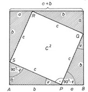
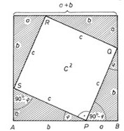

A Pitagorasz-tétel és bizonyítása
A derékszögű háromszög
Ha egy háromszögről azt mondjuk, hogy derékszögű, akkor ezzel egy adatát megadtuk. A háromszög meghatározásához
ezenkívül már csak két további adatra van szükségünk.
A derékszögű háromszög oldalai között az általános háromszögre vonatkozó már említett tulajdonságon túl még
szorosabb kapcsolat van. A közöttük levő összefüggést Pitagorasz-tételnek nevezzük. A korábbi években már
megismertük ezt a tételt.
A Pitagorasz-tétel
A derékszögű háromszögben a két befogó négyzetének összege egyenlő az átfogó négyzetével. (A befogó négyzetén, az
átfogó négyzetén a megfelelő szakaszhosszak négyzetét értjük.)

A Pitagorasz-tétel bizonyítása
A Pitagorasz-tételnek egyik egyszerű bizonyítási módja az, amelynek alapgondolata: egyenlő területekből azonos
nagyságú területeket elvéve, a maradék területek is egyenlő nagyságúak.
Vegyünk két négyzetet, mindkettő oldalhossza legyen a + b. Ezeket bontsuk részekre az ábrán látható módon.
A felső négyzetet gondolatban feldaraboltuk négy darab olyan derékszögű háromszögre, amelyek befogói a és b.
Ezek
azonos méretűek. Az átfogójuk is azonos hosszúságú, jelöljük c-vel. Ezenkívül két négyzetet kaptunk, az egyik
a2, a másik b2 területű.
Az előző „nagy„ négyzettel azonos területű alsó négyzetet öt részre daraboltuk. Ebből négy olyan derékszögű
háromszög, amilyent az előző felbontásnál kaptunk. Befogóik a és b, átfogójuk c.
Ha mindkét „nagy„ négyzetből elvesszük a minden méretében azonos (csak más helyzetű) négy-négy derékszögű
háromszöget, akkor a maradék területeknek is egyenlőknek kell lenniük.
A felső „nagy„ négyzetből két „kis„ négyzet marad, ezek együttes területe a2 + b2.
Az alsó „nagy„ négyzetből marad a középső négyszög. Ennek minden oldala c. Minden szöge 90°, mert (például) az
AB
oldal P pontjánál lévő nagyságát megkapjuk, ha az egyenesszögből elvesszük a derékszögű háromszög két
hegyesszögének
összegét, azaz 90°-ot. Mivel a négyszög minden oldala egyenlő és minden szöge 90°, a maradék négyszög is
négyzet.
Területe c2.
A kétféle módon kapott maradékterületek egyenlő nagyságúak. Ezért a2 + b2 = c2.
 
